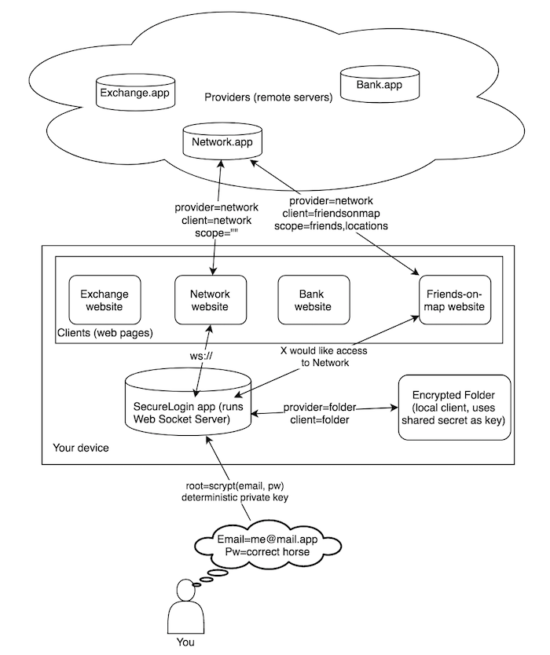

Introduction
This is a Draft RFC Specification for SecureLogin, an authentication protocol created by Sakurity. The development of this protocol started in 2014.
THIS SOFTWARE IS PROVIDED BY THE COPYRIGHT HOLDERS AND CONTRIBUTORS “AS IS” AND ANY EXPRESS OR IMPLIED WARRANTIES, INCLUDING, BUT NOT LIMITED TO, THE IMPLIED WARRANTIES OF MERCHANTABILITY AND FITNESS FOR A PARTICULAR PURPOSE ARE DISCLAIMED. IN NO EVENT SHALL THE COPYRIGHT HOLDER OR CONTRIBUTORS BE LIABLE FOR ANY DIRECT, INDIRECT, INCIDENTAL, SPECIAL, EXEMPLARY, OR CONSEQUENTIAL DAMAGES (INCLUDING, BUT NOT LIMITED TO, PROCUREMENT OF SUBSTITUTE GOODS OR SERVICES; LOSS OF USE, DATA, OR PROFITS; OR BUSINESS INTERRUPTION) HOWEVER CAUSED AND ON ANY THEORY OF LIABILITY, WHETHER IN CONTRACT, STRICT LIABILITY, OR TORT (INCLUDING NEGLIGENCE OR OTHERWISE) ARISING IN ANY WAY OUT OF THE USE OF THIS SOFTWARE, EVEN IF ADVISED OF THE POSSIBILITY OF SUCH DAMAGE.
SecureLogin is a protocol designed to authenticate users to remote servers and local applications using a SecureLogin client application.
Unlike password managers, SecureLogin is not something you can use with any application, but instead a protocol to interact with servers that have implemented this specification.
SecureLogin has a number of design principles:
sltoken with SecureLogin app is one and the only way to get into account. There must be no “recovery” options or trusted 3rd party services.
Let’s define a few terms we will be using throughout this document:
provider and authorize specific scope.provider=https://my.app
client=https://my.app
scope=(empty string)
web for https://securelogin.pw, or ext chrome extension or app for the native app. sltoken is easy to pack and unpack. It has following format:
csv( csv(provider, client, scope, protocol), csv(public_key, ) )
# Integrations
To support SecureLogin a website must include JS helper from https://cobased.com/sdk.js
To get signed sltoken the app must invoke SecureLogin(callback, flow, scope)
New users must type an email and master password to create a Profile. SecureLogin client runs key derivation function (scrypt) with logN=18 p=6 which takes up to 20 seconds.
The keypair derivation is deterministic: running following code will generate the same profile on any machine:
derived_root = require("scrypt").hashSync("masterpassword",{"N":Math.pow(2,18),"r":8,"p":6},32,"user@email.com").toString("base64")
Warning about Email verification: the protocol does not confirm user email and does not intend to do so. In our vision an email provided is merely an address for mails, not a primary key / identifier like in the classic authentication scheme. I.e. two accounts can have equal email.
We don’t recommend to confirm / verify it at all and let user specify whatever they want unless you are obligated by law to require explicit email confirmation